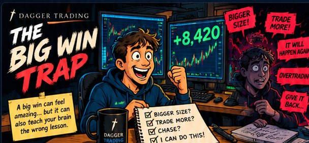

The dangerous lesson your brain can learn from a trade that worked.

A big win feels amazing. Sometimes it comes from a great setup and excellent execution. Sometimes luck, extra risk or perfect market conditions helped too. The danger begins when your brain turns one huge result into proof that your behavior should change.
The dangerous part isn't making a lot of money. It's learning the wrong lesson from how you made it.
The Big Win Trap happens when an unusually large profit changes what you expect from yourself and the market.
You may have traded beautifully. You may also have benefited from unusual volatility, extra size, luck or a move that simply kept going. The P&L alone cannot tell you which.
A monster winner can quietly make you feel more skilled, more certain and more entitled to another big result.
One winning trade can validate a bad decision just as easily as it can reward a good one.
2. The Big Win Loop
🏆
Big Win
An unusually large profit creates a powerful emotional reward.
🧠
Confidence Spike
The result feels like evidence that your read and instincts are exceptional.
🚀
More Risk
Size rises, standards loosen or trading frequency increases.
↩️
Giveback
Normal randomness returns and part of the windfall disappears.
Win → confidence → bigger expectations → more risk → possible giveback.
3. Bigger Size Feels Earned
“I handled that trade perfectly. I can handle more size now.”
But one outcome does not establish that your edge suddenly improved.
Confidence can increase much faster than actual skill.
4. Normal Wins Feel Small
After an $8,000 day, a normal $300 or $500 winner can suddenly feel disappointing.
That new reference point can push you to hold too long, trade too often or reject perfectly good profits.
A windfall can quietly reset what “enough” feels like.
5. You Start Chasing the Feeling
The money matters, but so does the rush. The next session can become an attempt to recreate yesterday rather than trade today's opportunities.
The goal shifts from executing well to making something big happen again.
6. A Winning Trade Can Be a Bad Decision
You chase with triple your normal size. The stock rips anyway and you make $4,800.
Your account says success. Your process says warning.
Judge the decision using what you knew before the outcome.
7. Protect the Process
After a huge win, review what actually produced it: setup quality, planned risk, execution, market conditions and luck.
Do not automatically promote one extraordinary result into a new trading rule.
Keep what was repeatable. Be suspicious of what was exceptional.
8. The 24-Hour Rule
Do not automatically increase size.
Do not force another monster trade.
Write down what was skill and what may have been luck.
Return to your normal rules before changing anything.
Protect the behavior that produced the win, not the emotional high created by it.
🗡️
9. Key Takeaway
A huge winner can grow your account and damage your process at the same time. The money isn't the trap. The lesson you take from the money is.
“Don't ask only how much you made. Ask what behavior the win just rewarded.”
10. Go Deeper (research, reflection & interactive reset)
Why a Big Win Can Change Your Behavior
A big profit does more than change your account balance. It can change what you believe about your decisions, how much risk feels acceptable and what you expect from the next trade. Four psychological ideas help explain why.
1. Outcome Bias: When Profit Makes a Bad Decision Look Smart
Researchers Jonathan Baron and John Hershey showed that knowing an outcome can influence how people evaluate the decision that produced it. A favorable result can make a questionable choice seem more reasonable in hindsight.
In trading: You chase with excessive size, make $8,420 and start believing the chase was a great setup. But the outcome cannot tell you whether the risk was justified before the trade.
Ask: Would I approve of this entry if it had lost?
2. Reinforcement: When the Market Rewards the Wrong Behavior
Behavioral psychology explains how rewarding outcomes can strengthen the behaviors that preceded them. In markets, rewards are uncertain, so a rule-breaking trade that happens to win can be especially memorable.
In trading: You ignore your stop once, the stock reverses and you escape with a profit. The danger is learning to ignore stops again, even though the next trade may not recover.
Ask: What behavior did this win encourage me to repeat?
3. The House-Money Effect: When Profits Feel Easier to Risk
Richard Thaler and Eric Johnson found that prior gains can affect subsequent risk-taking in experimental settings. This is often called the house-money effect. It does not mean everyone takes more risk after winning, but it is a useful warning sign.
In trading: After a big winner, you justify doubling your position because you are “only risking profits.” Those profits are now part of your account, and the next loss is real.
Ask: Would I take this same risk without yesterday's win?
4. The New High: When a Giveback Feels Like a Loss
Reference-point thinking helps explain why a new account peak can become the number you measure everything against. This is a trading application of the broader idea, not a claim that every trader reacts the same way.
In trading: Your account climbs from $25,000 to $33,420, then settles at $30,000. You are still ahead $5,000, yet the $3,420 giveback can dominate your thinking and tempt you to force a recovery trade.
Ask: Am I trading the setup, or trying to get back to my peak?
Reflection: Was It the Decision or the Outcome?
Think about your biggest winning trade. If the exact same decision had resulted in a loss, would you still call it a good trade?
If not, what were you really celebrating: the quality of your decision, or the money it happened to make?
Try this: Write down one behavior from that win you would repeat, and one you would refuse to repeat, regardless of the P&L.
The Big Win Trap: Interactive Experiment
You just had a huge winner. Explore five moments when that win could influence your trading decisions. Each scenario is a separate situation, not a consequence of your previous answer. Choose what you would do and see what it may reveal. There is no score. This is a reflection on your process.
STAGE 1 OF 5
Process vs. Outcome
A profitable result does not automatically validate the decision that produced it, and a loss does not automatically invalidate a sound process. This is why reviewing trades only by P&L can teach the wrong lesson.
Bad process + good outcome is the Big Win Trap's most dangerous combination: the mistake is rewarded.
Build Your Post-Big-Win Reset
Decide your response while you're calm. Your entries stay in this browser and are not submitted to Dagger Trading.
Your entries stay in this browser. Nothing is submitted to Dagger Trading.
POST-BIG-WIN RESET
My Big Win Reset
Protect the process after an extraordinary outcome.
🗡️
One big win does not rewrite the rules.
The goal is not to fear big wins. Enjoy them. Just don't let one exceptional outcome quietly rewrite a process that took years to build.
The Lesson to Take Forward
One extraordinary outcome is information, not proof that your edge or risk tolerance has changed. Review the setup, risk and execution independently of the profit, then use your reset to protect the habits you want to repeat.
Further Reading
Baron & Hershey (1988), Outcome Bias in Decision Evaluation, on how knowledge of outcomes can influence judgments about decisions. Read the research →
Thaler & Johnson (1990), Gambling with the House Money and Trying to Break Even, on how prior gains and losses can influence subsequent risk-taking. Read the research →
Suggested book:Thinking in Bets by Annie Duke explores why good decisions do not always lead to good outcomes. See the book in Trading Resources →
Reinforcement is a general behavioral-learning concept. The trading examples in this lesson illustrate possible applications, not experimental findings about these specific trades.
Educational content only. This lesson applies behavioral-psychology concepts to trading and is not psychological or financial advice.